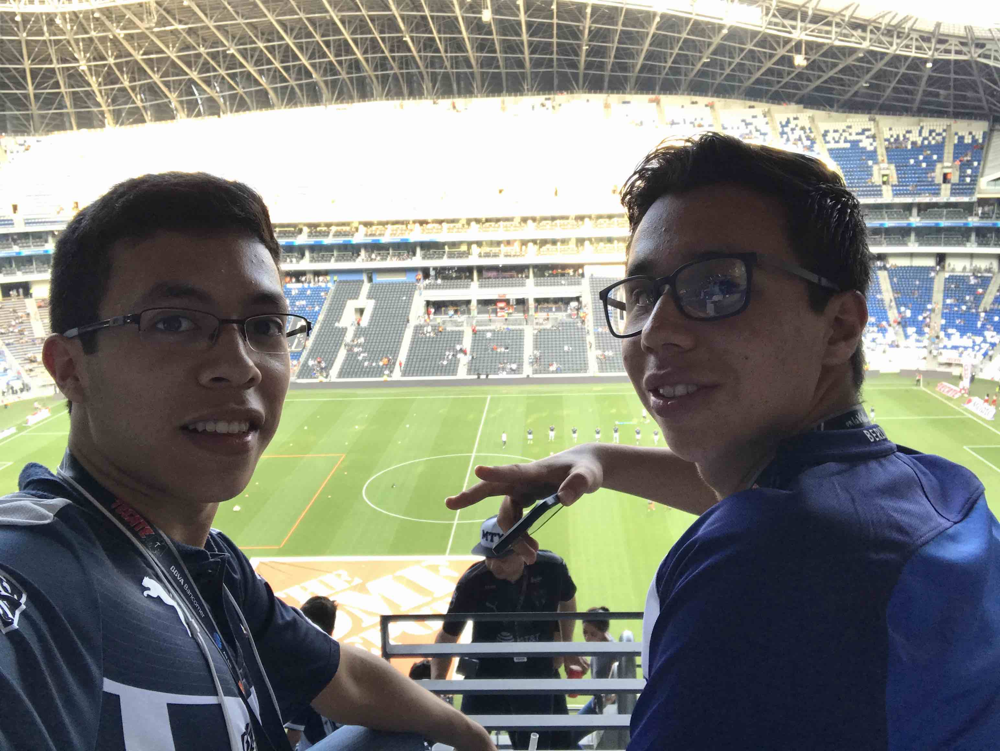

Armando Roque's Portfolio
Hi and welcome to my personal portfolio! I am Armando, and here you will find interesting things about me (thanks for being interested!). I am currently studying Computer Science at Tec de Monterrey. During the Summer of 2020 I will be working as a Google intern in the STEP program (this is where this project was born), really exciting stuff!
About me
My Background
I was born in Monterrey and have lived there ever since. Currently I am years old. I live with my partents and my brother Gabriel, who is also into Computer Science.
I attended elementary and junior high school at Regio Contry, a Lasallian school where I spent 9 years (it is amazing to realize how much time I spent in those classrooms). After that I attended Prepa Tec Eugenio Garza Laguera High School, where I had so much fun and met many of my best friends. I also learned a lot, and I had the opportunity to take IB classes (Math, Business Management and Computer Science). After that I was admitted to Tec de Monterrey, and I've studying Computer Science there since 2018.
Why Computer Science?
I was interested in technology since I was young, since my father has always been a computer enthusiast, so I had the chance to play with electronic gadgets as I was growing up. I was formally introduced to Computer Science in high school, where I worked with Java. After that, I figured out that I could continue learning about this interesting field of study and decided to major in it. The topics I am currently interested in are machine learning, blockchain, computer vision and complexity theory.
My Projects
Work projects
Google STEP Internship
Web app developer / Summer 2020
- Build web apps using HTML, CSS, JS and Java Servlets.
- Work in Pod of 3 members and 2 hosts for capstone project.
- Worked from home in virtual internship model.
- Click here to see the GitHub repo.
ITESM Virtual Learning Center
Project develoment lead / January 2019 - June 2020
- Develop web applications using Bootstrap framework (HTML, CSS, JS)
- Coordinate and assist team of 17 junio developers working on individual web applications.
- Assist project director as tech advisor, manage organization's GitHub repo.
- Click here to see the GitHub repo.
Personal projects / Contests
IBM Data Challenge
Web app developer / May 2020
- Develop web application in team of 3 members using React framework.
- Train Machine Learning models using IBM Watson technology.
- Models diagnose COVID-19 based on torax x-ray and predict heard disease based con ECG data.
- Click here to see the GitHub repo.
Energy Reader
Web app developer / Hackathon August 2019
- Develop web application in team of 4 members using Bootstrap framework and NodeJS for backend.
- Display real time water and gas consumptions obtained from Arduino device.
- Click here to see the GitHub repo.
School projects
FISTec Java App
Java developer / Spring 2019
- Develop Java CLI app in team of 3 members.
- App simulates local marketplace.
- Wrote app design following IEEE 830 SRS document.
Drug store inventory manager
Java developer / August 2017 - March 2018
- IB Computer Science Internal Assesstment project.
- Inventory manager app built for real pharmacy.
- Wrote documentation and built GUI using Swing library.
- Click here to see the GitHub repo.
My Hobbies
Just some stuff I enjoy doing in my spare time.
Marching band
I currently play the snare drum at my college's marching band, and I can also play the cymbals. It is really fun playing with the band and we get really excited when we get the chance to play at our local team's games and at Pep Rallys at our local theatre.
Check out this video we made while staying at home during the spring of 2020!
🔝Así es cómo nuestros percusionistas siguen creando música desde casa. 😮🥁🎶 #StompAtHome pic.twitter.com/0L2AIg50PA
— Arte y Cultura Tec en Monterrey (@ArteyCulturaTec) May 27, 2020
Cycling
I enjoy hitting the trail with my mountain bike! It is really cool being able to excercise surrounded by nature and expore new routes. By the way, I am currently also trying to get into road cycling.
Here are some pictures we have taken during our routes.
Soccer
I am a huge fan of soccer, and I enjoy watching and playing the sport (even on videogames!). I have always supported the local team Rayados, and thanks to my uncle I now also support German team Borussia Dortmund. Sometimes I think I could have been a professional soccer player!
Here is a photo of my friend Chava and me at Rayados' stadium.
Traveling
I find it very interesting to be able to discover and interact with different cultures and all their historical treasures.
I built this small map guide containing a few places you should visit when you come to Mexico!
Click here to get a random message:
Click here to get info from a random car:
Comments!
Previous comments